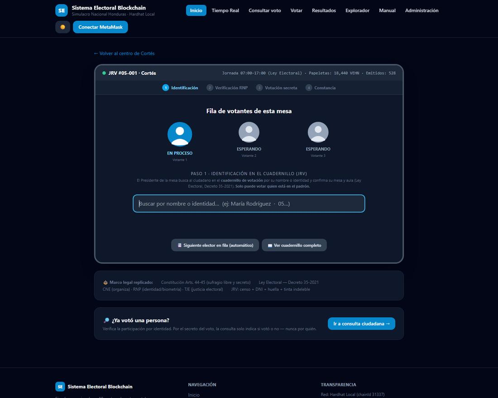
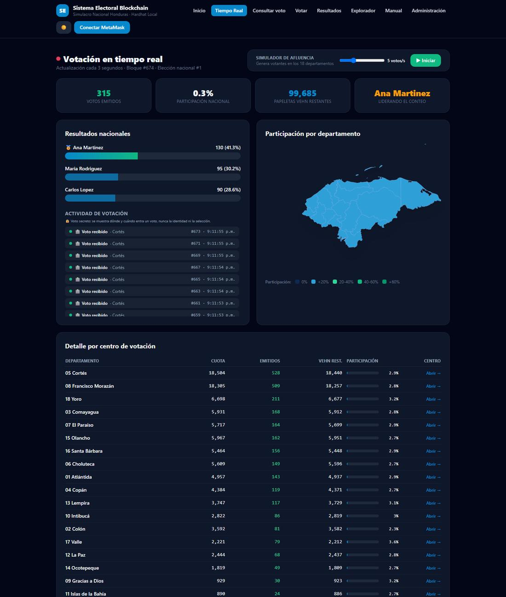
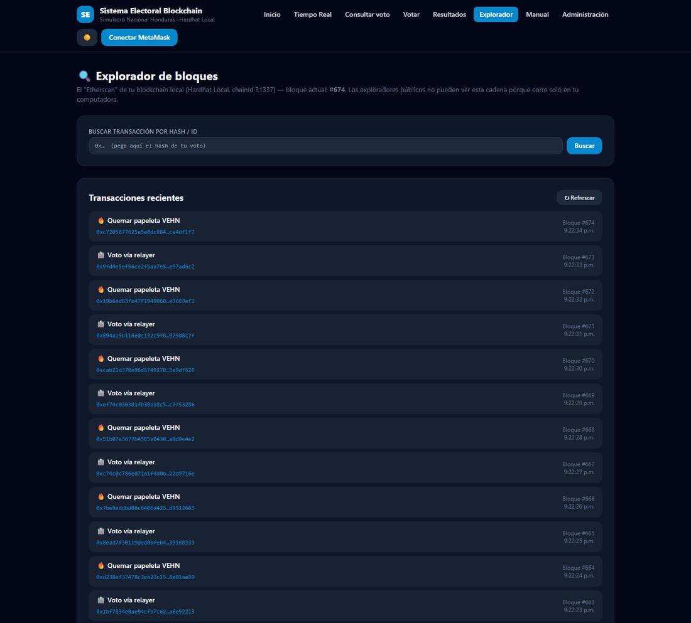
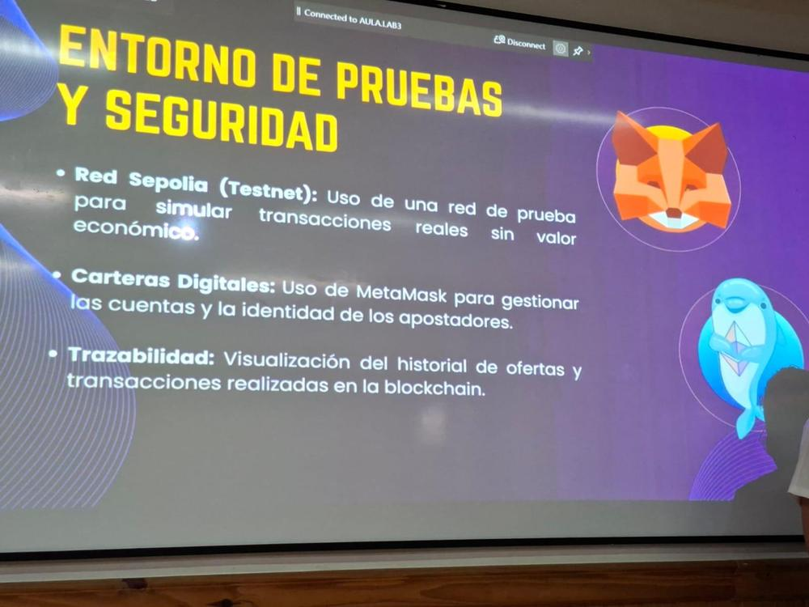
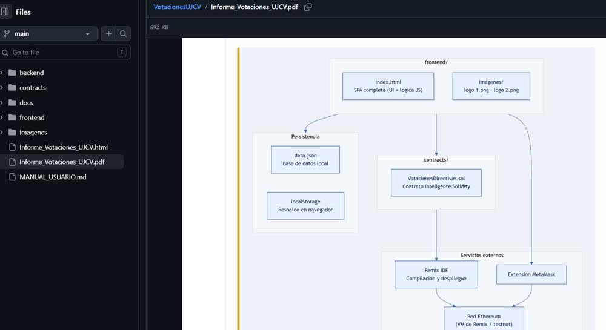

Experiencia educativa · CINNES 2026
Un aula de la Universidad José Cecilio del Valle construyó el sistema electoral descentralizado que aquí se presenta. Cada voto queda escrito en la cadena, con su hash verificable, donde nadie puede borrarlo.
El sistema replica el procedimiento real de una Junta Receptora de Votos y lo lleva a la blockchain: identificación en el cuadernillo, verificación, voto secreto y constancia con su hash de transacción.

El documento de identidad viaja convertido en hash con sal criptográfica. En la blockchain solo existe una huella y una billetera: el vínculo con la persona no se publica.
Cada voto quema una papeleta digital. Cuando se agotan, el contrato rechaza la operación. Rellenar una urna deja de ser un riesgo administrativo y pasa a ser imposible.
La consulta ciudadana informa la participación sin comprometer el secreto del voto, igual que el padrón público de participación.


Blockchain y Web3 se enseñaban de forma teórica y fragmentada. La respuesta fue exigir un producto único que atravesara tres asignaturas, de modo que los conceptos dejaran de competir entre sí y pasaran a sostenerse mutuamente.

| Estudiantes que desplegaron un contrato funcional | 100 % |
| Estudiantes que firmaron una transacción | 100 % |
| Equipos que entregaron la aplicación completa | 100 % |
| Desempeño global en la rúbrica analítica | 92 / 100 |
Los indicadores son de ejecución y se comprueban en la propia cadena. La experiencia no contó con una prueba diagnóstica inicial, de modo que no se reporta ganancia previa y posterior: reconocerlo es preferible a estimarla.

Imagine un cuaderno del que todos tienen una copia idéntica. Cada anotación se copia en todas a la vez y queda encadenada a la anterior. Para alterar una página vieja habría que rehacer todas las siguientes, en todas las copias y al mismo tiempo.

Miles de computadoras guardan la misma copia. Si una miente, las demás la contradicen.
Un programa que se ejecuta solo al cumplirse la condición pactada, como una máquina expendedora.
Representar algo en la cadena para transferirlo y auditarlo: un boleto, un diploma, una papeleta.

Tokens que buscan mantener un valor estable. Su solidez depende por completo de su respaldo.
Bitcoin nació en 2009 para transferir valor sin bancos: deliberadamente simple y conservadora.
Ethereum introdujo los contratos inteligentes y pasó de mover dinero a ejecutar programas.
BNB Chain usa las mismas herramientas con comisiones más bajas y menos descentralización.
Y existen muchas más, como Solana, Polygon, Avalanche o Cardano, cada una con su equilibrio entre velocidad, costo y descentralización.
La misma tecnología ya traza alimentos desde la finca hasta el supermercado, certifica títulos académicos, sigue el recorrido de medicamentos y registra votaciones como la de este proyecto. Es infraestructura, no una moda financiera.
Para programarla se usa Solidity, y para aprender no hace falta dinero: el editor Remix abre en el navegador, MetaMask hace de billetera y una red de pruebas entrega fondos ficticios. Así aprendieron estos estudiantes.
Listos para imprimir a doble cara y plegar en tres. Se usaron en la ExpoInnova del Congreso de Innovación en Educación Superior.